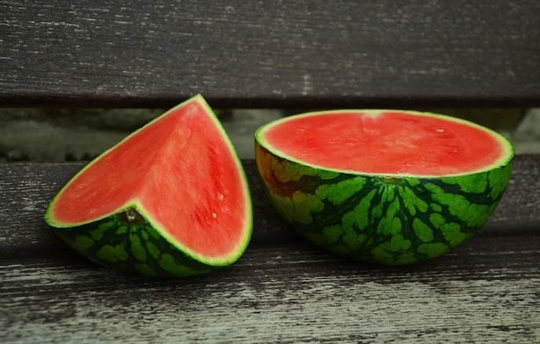

상품 소개

수박(watermelon)
대개 수박이라 하면 수박이라는 식물의 열매를 지칭하며, 대개 사람 머리통보다 큰 열매가 덩굴에 맺히며 수분 함량이 높은 것이 특징이다. 과육의 대부분은 물로 구성되어 있다.(91% 수분, 6% 당 등). 수분 함량이 높아서 땀을 많이 흘린 여름에 섭취하기에 좋다.
당분 함량은 수박 100g당 당분 6.2g이다. 단맛이 강한 데 반해 당분 함량은 적은 편인데, 이는 신맛을 내는 유기산 함량이 매우 낮아서 순수하게 단맛만이 강하게 느껴지기 때문이다